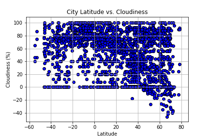

Both cloudiness and wind speed appear to not have any correlation with latitude. They both have observable values at the same levels across latitudes. All cities, regardless of latitude, generally have between 2-15 mph winds. However, one area to explore further might be at 35-45 degrees, where there seems to be a small cluster of cities with above average wind speeds.
